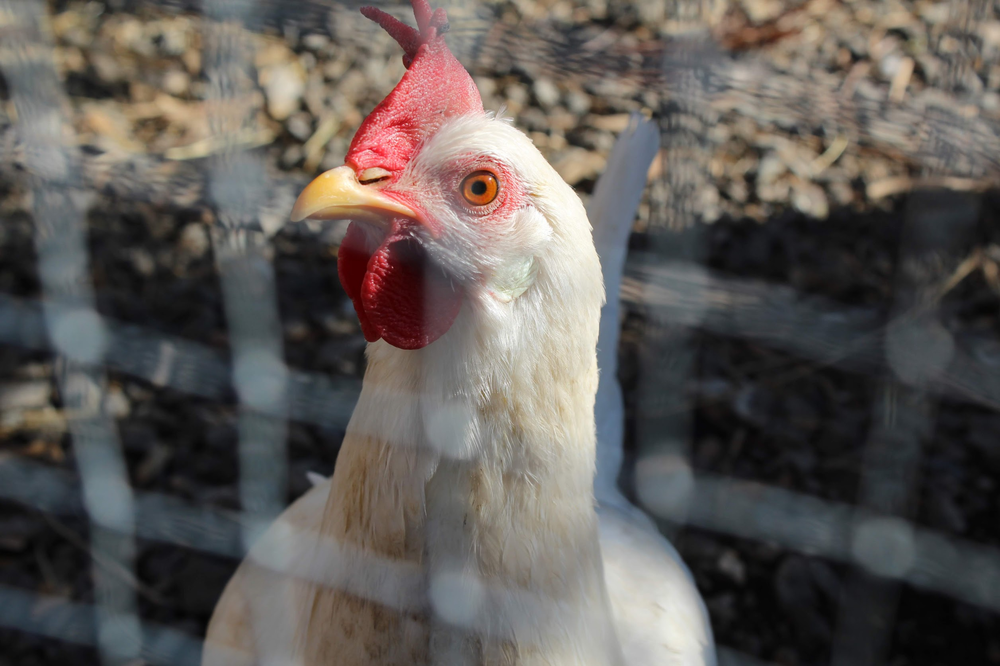
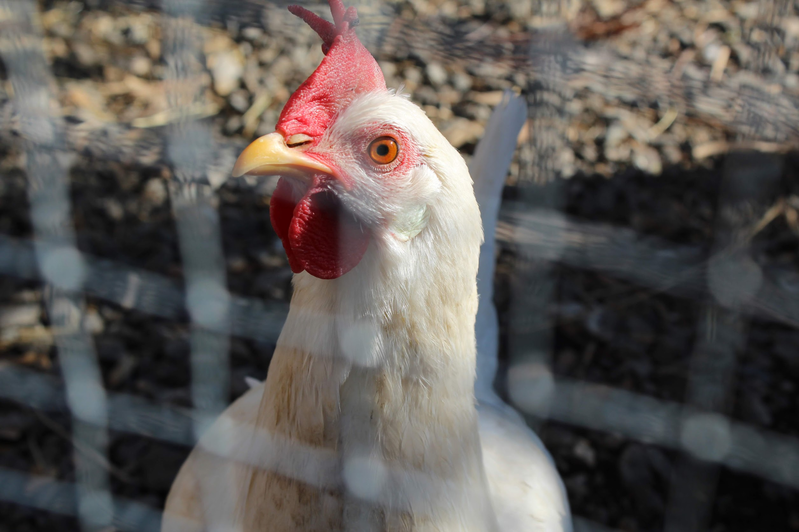

My name is Joe and my easy-going, loving personality allows me to relate to people on a deeper level.
 



This website inspires me because of the simplistic layout and easy to navigate home page. The use of hidden tabs make the webpage more clean cut and official, while the tabs provide easy to access images and information.